Chapter 13: Instrumentation¶
Being a great iOS software engineer isn’t only about being a grandmaster of the Swift language. It’s also about knowing which tools the platform puts at your disposal, how to use them to sharpen your skills and how to identify areas of improvement in your code.
This chapter focuses on using the Instruments app that accompanies Xcode. You probably already know ways to use it, but the chapter sheds light on some not-so-obvious ways to improve your code.
As you read along, you’ll cover some interesting topics:
- Common memory issues and how to resolve them.
- How to measure performance and identify bottlenecks in your code.
- How to measure and improve the performance of CoreData.
- How to identify lines in your code that take too much time to build.
- An interesting instrument called Timelane, which you can install as a plugin to Instruments.
- How you can use
os_signpostto send your information on Instruments.
Getting started¶
In the starter folder, you’ll find multiple projects. You’ll use them all throughout this chapter. To begin, open the project “TheExhibition”. Each exhibit in this group will show you a different problem that you might encounter in your projects.
Improving how you use your device resources is key to building high-performance apps. For the first section, you’ll cover memory.
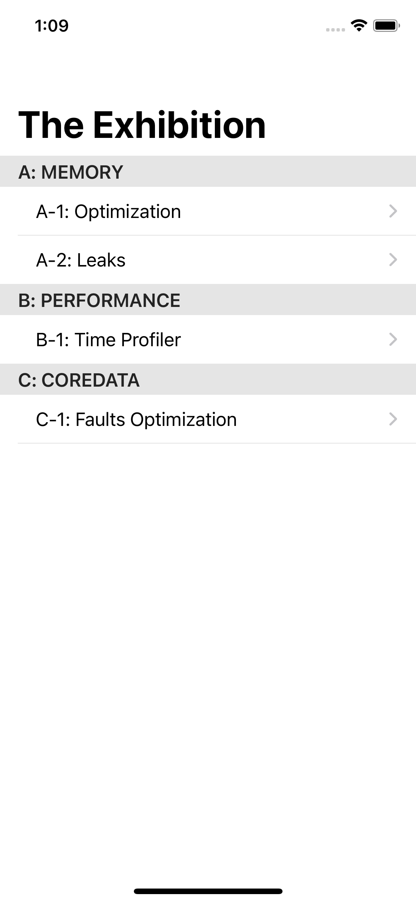
Memory optimization¶
The first exhibit, A-1: Optimization, is a gallery of wonderful images from NASA.
These are high-quality photos. One of them has a resolution higher than 6,000×6,000 pixels!
This exhibit has an effect on the app’s memory. You’ll use Instruments to identify what’s causing this memory problem.
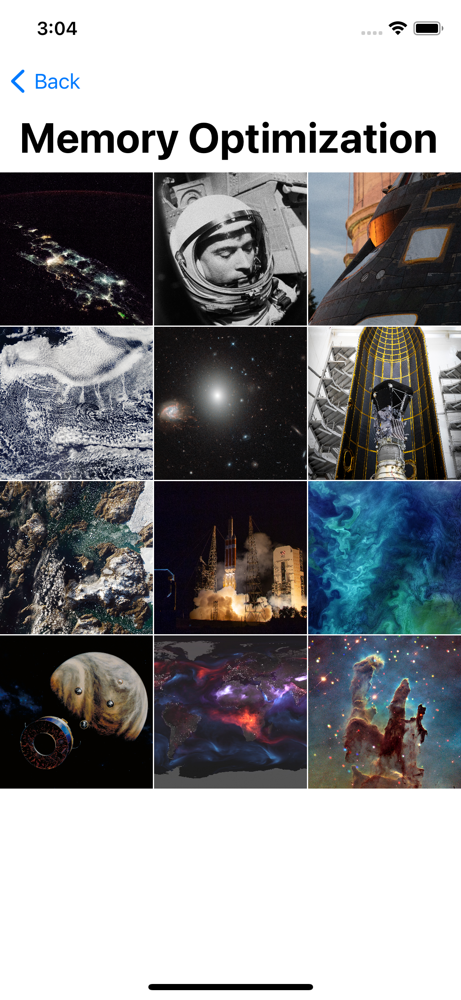
From Xcode, press Command-I to start profiling the app. Choose Allocations in Instruments. Then press the Record button at the top-left corner.
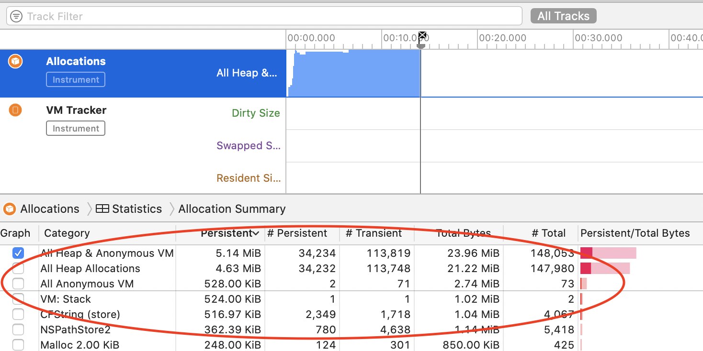
As the app runs on the simulator, Instruments will show you every allocated object in memory. The very top item in the list, All Heap & Anonymous VM, shows all your app’s memory usage.
While Instruments is recording, tap the first item in the simulator. The app will freeze for a few seconds and Instruments will show a huge spike in memory usage.

One new allocation entry responsible for this large increase is VM: ImageIO_AppleJPEG_Data. It has 21 allocations of almost 800 MB.
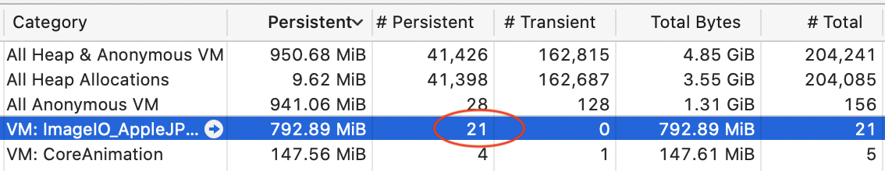
It might seem strange that your images can take up so much space when the overall file sizes are much much smaller. You’ll find out why that happens in the next section.
Calculating memory usage for images¶
The space that images take up in memory isn’t equal to their file size. Rather, images allocate memory that fits their resolution size. An example:
The first image has a resolution of 5011×3341 pixels. The size of each pixel is 4 bytes, meaning that when this image is loaded in memory, it occupies almost 64 MB. Images with such large resolution come at a cost.
But the gallery has only 12 images. Why does Instruments list 21 allocations? To answer that, open MemoryOptimizationViewController.swift. Reduce the value of totalImages to 11. Profile and record the app again.
Open the first screen and notice the new number of allocations on VM: ImageIO_AppleJPEG_Data.

It’s 11, as it should be. How did that one image make a difference in 10 allocations? The answer lies in the image itself.
The last image has a resolution of 6228×6198 pixels. This takes over 147 MB of memory to load! But the OS didn’t load this large amount of memory under one object. It broke it down to 10 objects, which is why there are 21 total objects.

Next, you’ll see how you can change your app to use memory more thoughtfully.
The solution¶
Now that you’ve established that the problem is caused by the high resolution of the photos, you’ll reduce their size to something more friendly to the gallery screen.
Open each image with the Preview app. Resize it from Tools ▸ Adjust Size. Change the unit to pixels and the width to 1024. Leave the padlock closed to maintain the aspect ratio of the image.

It’s helpful to know the resolutions of the devices that will run your app. The resolution of the iPhone 11 Pro Max is 2688×1242 pixels. A 12.9-inch iPad has a resolution of 2732×2048 pixels. Knowing those numbers can help you fine-tune the images so they look good but don’t take up unnecessary space.
Once you finish updating the sizes, profile and record your app on Instruments and open the first screen.
You’ll notice that there was barely any freeze while the gallery loaded, and the increase in memory use is much smaller.
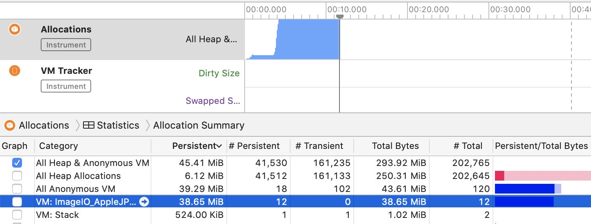
Congratulations, you reduced the memory use of the gallery screen without having to change any code. You can see that it’s worth paying attention to the assets you use in your project. Higher-quality images mean a better-looking app, but they might use too much memory. In this case, that extra improvement no longer adds value — rather, it affects your app negatively.
In the next part, you’ll continue to improve your app’s memory usage. But now it’s time to make sure all references to an object are cleaned from memory when you finish with them. This sounds basic, but there are many details around the tools that help you improve your object handling.
Memory leaks¶
Handling leaks is like the ABC’s of memory management. “Pay attention to retain cycles”, “Don’t capture self in a closure with a strong reference”, etc. So what’s new to say about the issue?
It’s the same story. But it might not always be as clear as you think!
In exhibit A-2: Leaks, you’ll see a memory leak that Instruments doesn’t capture at all.
The exhibit shows a very basic screen. It has a single button and a joke above it. Each tap on the button fetches a random, awesome joke from https://icanhazdadjoke.com/.
In your current Instruments window, add the Leaks item from the library. If the + button is greyed out, you’ll need to stop recording first.
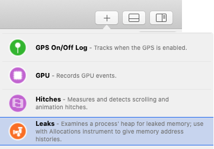
Profile and start recording the app, then open the second screen. Wait a few seconds, then tap Back to close the screen, then open it again. Wait a few seconds and repeat a couple more times.
Notice that Instruments didn’t flag anything.
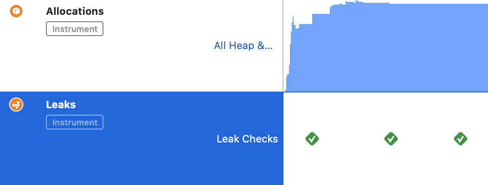
Here’s where this gets interesting. Select the Allocations section and search for MemoryLeaksViewController.

Those are all instances of MemoryLeaksViewController still available in your memory. The total number depends on how many times you opened the screen.
How is that possible? Take it even farther. Build and run the app from Xcode this time. Repeat the same process of opening and closing the second screen. Then open the Debug Memory Graph from Xcode.
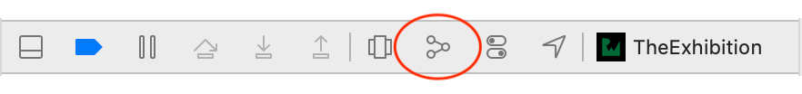
Filter memory objects of MemoryLeaksViewController, in the filter input box at the bottom-left corner. You’ll find there are a few objects from that view controller that are still alive.

They are there! Instruments knew about them. Xcode knew about them. And yet the Leaks meter knew nothing about them? Why not?
To find out, look at the code. In Xcode, open MemoryLeaksViewController.swift. Inside viewDidLoad(), you’ll see it creates an instance of InformationWriter. That instance takes the view controller itself as a parameter, then it calls doSomething:
override func viewDidLoad() {
super.viewDidLoad()
infoWriter = InformationWriter(writer: self)
infoWriter?.doSomething()
}
Moreover, MemoryLeaksViewController conforms to the protocol WriterProtocol, which only defines the method writeText(_:):
protocol WriterProtocol {
func writeText(_ text: String)
}
Now, look at InformationWriter.swift. Its init takes a writer as the parameter and creates a closure that calls writeText(_:) on that writer:
init(writer: WriterProtocol) {
writeOperation = { info in
writer.writeText(info)
}
}
You probably already noticed where the problem lies. The closure created in the init(:) captures a strong reference to the writer. So adding [weak writer] should do the trick.
But before you fix anything, build and run the app and open and close the leaks screen a few times. Then, open the Debug Memory Graph and choose one of the MemoryLeaksViewController instances that are still allocated.
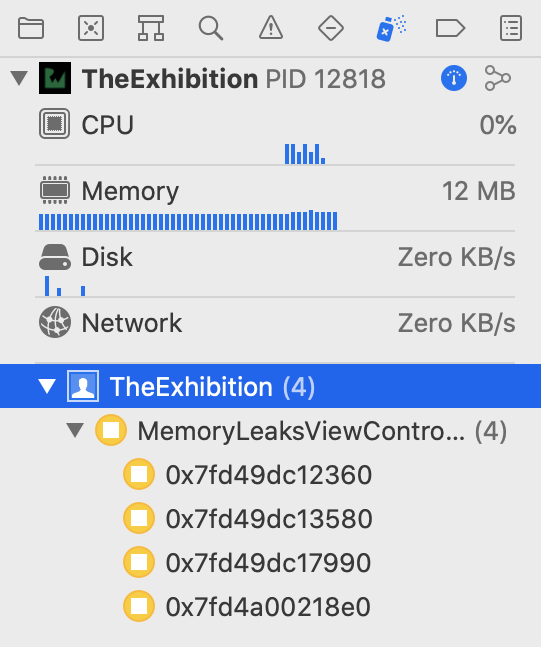
Memory graph is conservative¶
The memory graph isn’t part of the Swift language. It’s a tool that analyzes the app in memory during runtime. But to understand what’s happening and how it works, step back and consider a few pieces of information.
You’re familiar with ARC, short for Automatic Reference Count. It’s the system Apple uses to manage memory, and it’s been around since iOS 4. You know about weak, unowned and strong references. Those are the only possible combinations for any reference type. The compiler tracks the count of references for each object. When the count reaches zero, the compiler releases the object from memory.
The Debug Memory Graph works in a different way, however. It uses an approach that’s much closer to a garbage collector than it is to ARC.
A garbage collector needs to build a memory graph of an app at a specific moment. It then identifies the orphaned objects or cycles to delete. Those are objects that aren’t linked to the main app anymore.
A graph can be precise or conservative, depending on how the collector constructs its memory graph. To construct a precise graph, a collector must identify all pointers. And for that, the code generator or compiler must keep pointers or any information needed for the graph in an accessible and obvious way.
A conservative approach is different. It explores memory and starts building the graph. But at some points, it won’t be sure if something is a value or a pointer, raising the possibility of false positives or false negatives.
Xcode’s Debug Memory Graph is conservative. It’s built on top of the Leaks instrument. In fact, they’re practically the same thing, just represented differently. The Debug Memory Graph analyzes a snapshot of your app’s memory, regardless of whether the app was built in Swift, Objective-C or even C. But the graph can identify if the reference found was weak or strong.
In the scenario you’re debugging, the memory leak is present, but the memory graph is confused. It’s not sure if some references to the view controller are valid references or not.

Fixing the leak¶
Now, it’s time to fix the leak. In InformationWriter.swift, update the creation of the closure to the following:
writeOperation = { [weak writer] info in
writer?.writeText(info)
}
In WriterProtocol.swift, add the AnyObject constraint on the protocol.
protocol WriterProtocol: AnyObject
You can’t capture weak references for value types, and because protocols work for value types and reference types, the [weak writer] part won’t be valid unless it’s clear that WriterProtocol instances are always reference types.
Now that you know how to measure your memory usage, optimize it and make sure that it’s cleaned up and nothing stays there longer than it should, it’s time to move to the other valuable device resource you need to be aware of: the CPU.
You deserve to grab a drink and have a break before jumping to the next section.
Performance¶
B-1 Time profiler, the 3rd cell in The Exhibition app, is a collection view of random numbers along with how many times that number was generated. It doesn’t do anything fancy. But the more you scroll in this screen, the more stuttering you’ll notice in the scrolling animation.
You’ll use the Time Profiler instrument to help you identify what’s causing this effect.
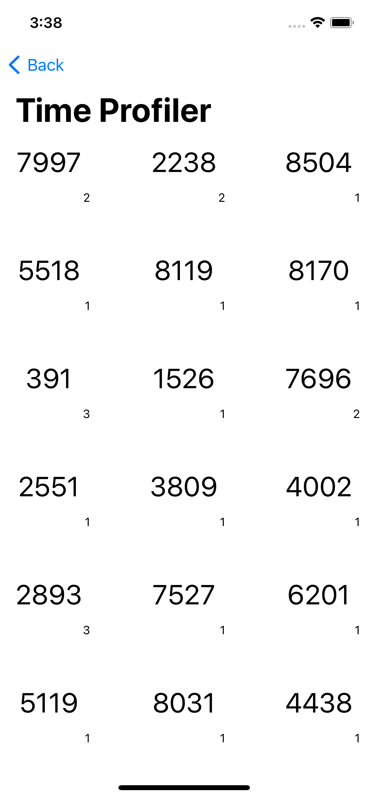
The number with the large font is the random number and the small digit in the lower-right corner tells you how many times that number was generated.
The more you scroll, the rougher the scrolling gets. It might not be very obvious that your app has a performance issue, especially in the beginning. But it’s worth making sure either way.
Profile and record the app using the Time Profiler instrument. Open the third screen and spend some time scrolling.
Before looking at Instruments’ data, filter what it’s showing so you don’t get lost in all the stack traces.
At the very bottom of the Instruments window, click Call Tree and check Hide System Libraries. This will filter the call stack to calls related to your app, keeping out system calls.

The Time Profiler should show something like this:

You can see something’s wrong here. For about 40 seconds of scrolling, TimeProfilerViewController.collectionView(_:cellForItemAt:) is taking over 80 percent of the execution time. And TrackedNumbersGenerator.generate() is contributing to nearly all the CPU time.
Now, expand TrackedNumbersGenerator.generate().

As you can see, saveTrackedNumbers() is the cause of all that CPU time.
Measuring the impact¶
Now that you’ve identified where the issue is, how about measuring the impact directly from your app? You’ll show it among the other information in the collection.
Go to MachineTimer.swift and check the first line after the declaration of the struct:
let startTime = mach_absolute_time()
This gets the processor time at the moment of initializing an instance of MachineTimer.
Now, take a look at mark():
func mark() -> Int {
var baseInfo = mach_timebase_info_data_t(numer: 0, denom: 0)
guard mach_timebase_info(&baseInfo) == KERN_SUCCESS else {
return -1
}
let finishTime = mach_absolute_time()
let nano = (finishTime - startTime) *
UInt64(baseInfo.numer / baseInfo.denom)
return Int(nano / 1000)
}
This method calculates the time spent between the creation of the timer and the moment this method was called. The original value is measured in nanoseconds, so to make it more human-friendly, it returns it in microseconds.
Go to TimeProfilerViewController.swift and add the following line at the very beginning of collectionView(_:cellForItemAt:):
let timer = MachineTimer()
And add this line to just before return cell:
cell.time = "\(timer.mark())μs"
Build and run. Open the third screen and see the new values:
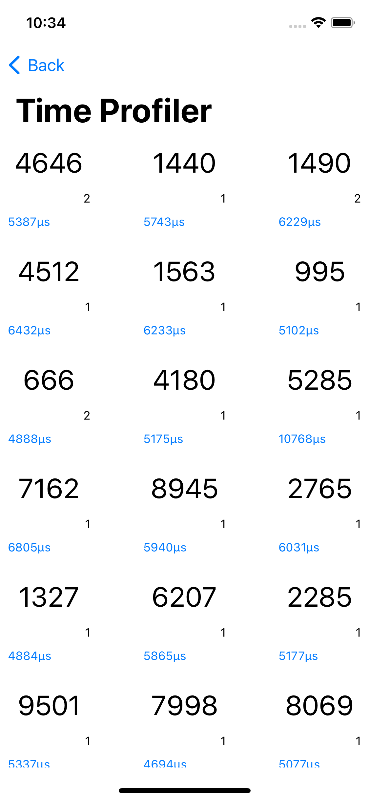
Those numbers seem tiny in the beginning. Each is just a few milliseconds. Doesn’t seem like much, right? But those few milliseconds are repeated for each cell, and as you scroll, this spent time repeats over and over again.
Instruments already pointed out that this area accounts for over 80 percent of your whole app’s CPU usage. You can definitely improve something here.
Open TrackedNumbersGenerator.swift. At the top of the class, change the value of shouldAlwaysSave to false.
Build and run. Open the third screen and see how the numbers changed:
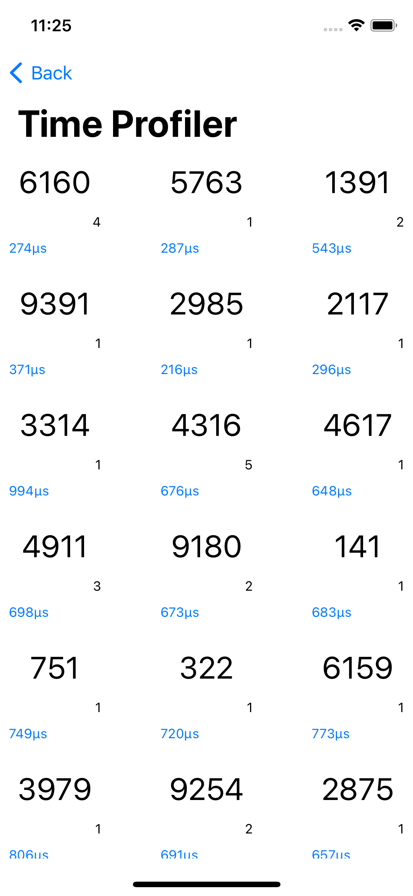
Now, you see a few hundred instead of several thousand. Look at Instruments, too.

collectionView(_:cellForItemAt:) now takes less than 25 percent of the execution time. This is a major improvement.
You just turned off the saving feature, but your app still needs to save all the generated numbers to the file. You’ll solve this in the next step.
Solving the problem¶
Your app was saving new information to the file every time you generated a new number. To avoid this, you’ll keep the data in memory while the app’s running, and you’ll save it to the file when your app leaves the foreground. In other words, you’ll:
- Load data if it was previously saved.
- Manipulate the data as much as you want.
- Write it back to disk when you’re done using it.
The user will enjoy your fast and responsive app, and you’re safely storing the data when the user is done.
Open AppDelegate.swift and add this method at the end of the class:
func applicationDidEnterBackground(_ application: UIApplication) {
TrackedNumbersGenerator.saveTrackedNumbers()
}
Disk access is an important performance factor, and you’ve just solved one more issue on your app. Way to go!
In the next section, you’ll use Core Data to read info from the disk. Although Core Data abstracts that operation for you, a few changes can highly improve how many times you fetch data from the disk.
Core Data¶
C-1: Faults Optimization lists all the countries in the world and the continent where each resides. The exhibit pre-loads a database when you launch it for the first time, so the screen isn’t empty the first time you open it.
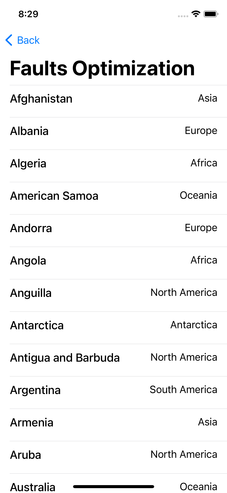
The database schema has three tables: Countries, Continents and Languages:
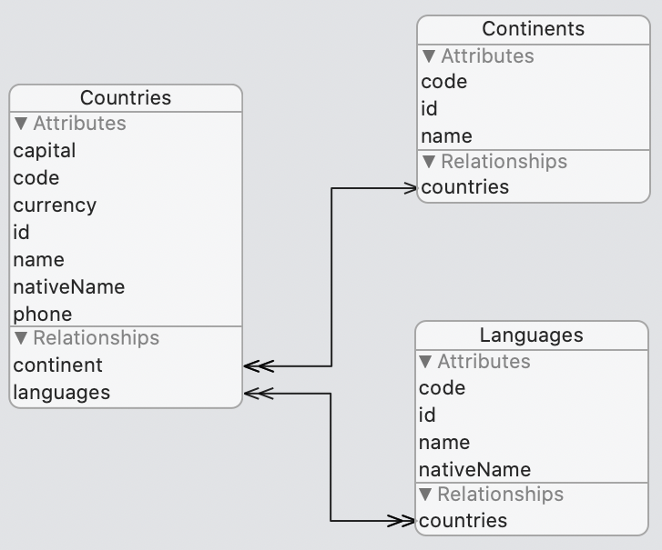
Countries has a many-to-one relationship with Continents. Each country has only one continent, but each continent can have many countries. It also has a many-to-many relationship with Languages.
Profile and record the app with the Core Data Instruments template, or add Faults to your existing one. Open the last screen.
Before you scroll through the content, Instruments will show you six Core Data Faults. Once you start scrolling, a seventh will appear, and that’s it! No matter how long you scroll, up or down, no more faults will appear.

You might ask why they were seven faults? That’s easy. It’s because there are seven continents, at least in this database.
So what is a fault? To explain quickly, it means that the app attempts to read an object from memory, because that’s the first location and has a higher I/O speed. However, that object is not present, so it automatically tries to read from another location — the disk, with a slower I/O speed. It then updates the first location with that information in case it was requested again.
Processors already use the concept of fault. When you launch an app, not all of it is loaded in memory to be executed. Instead, the processor loads only the parts that are needed at the time, and it will automatically bring in more parts of your app from the disk as you continue to use it. Memory is much faster than disks, but also much smaller — and, therefore, more expensive.
When you initialize Core Data, it won’t load all of its data to memory. It will load only the information you fetch, which in this case is the list of countries.
Although each country has other relationships, those aren’t loaded in memory at first. Reading each continent’s information for the first time triggers a fault to read that object from the database and store it in memory.
Each fault takes some time to resolve, and Instruments can show you how long each fault took.
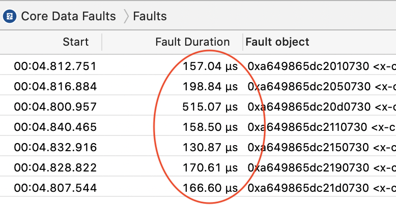
Those faults aren’t causing any performance impact, but as you saw in the previous example, even tiny impacts can become a problem when they’re repeated too often.
Open CoreDataOptimizationViewController.swift, and at the very top, right before the class declaration, you’ll find the constant shouldShowLanguages. Set its value to true. This will show the languages people speak in each country.
Profile and record the app. Open the last screen.

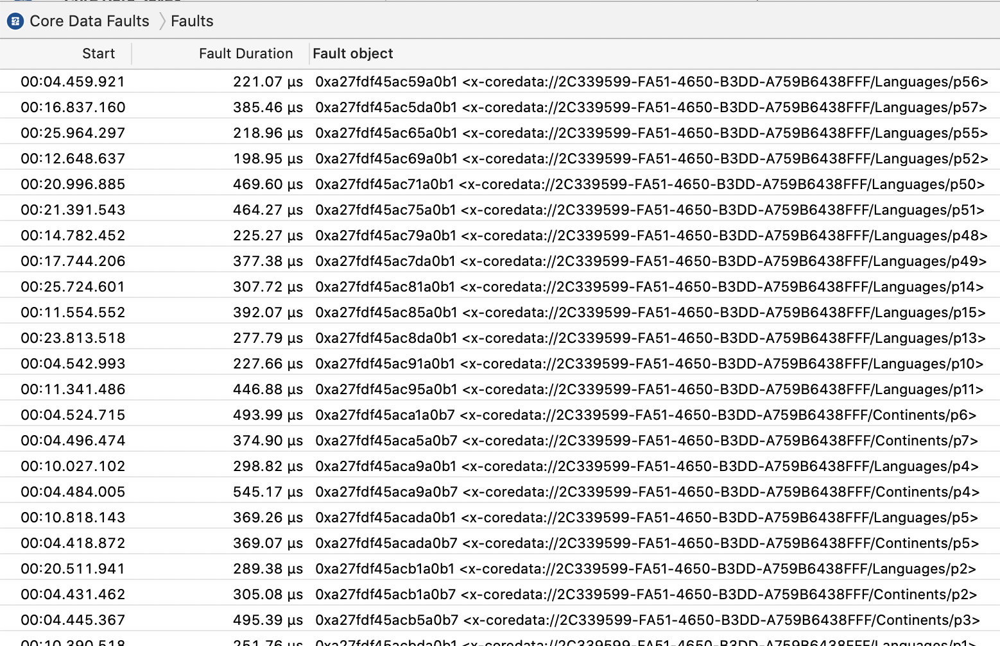
Now you can see there are many more faults going on. When each language object is accessed for the first time, it’s read from the database. As you scroll, more faults will appear.
Core Data pre-fetching¶
Core Data offers a way to pre-fetch objects in relationships within the fetch request. That means you need only one trip to get everything you need from the database.
Open CoreDataManager.swift, and in allCountries(), add this line right after the creation of request:
request.relationshipKeyPathsForPrefetching =
["languages", "continent"]
Profile, record the app and open the last screen. You won’t see any faults occurring at all on Instruments.
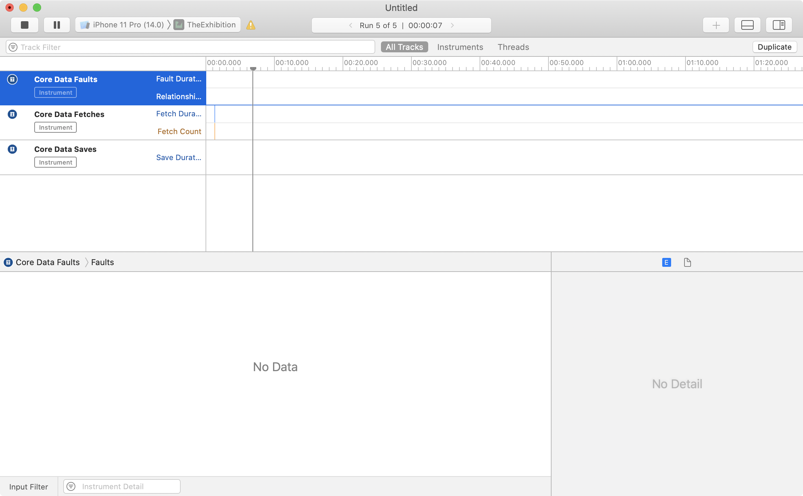
That’s because you specified on the fetch request to pre-load the objects in those relationship properties.
If you have a large operation on your database, this could greatly improve your performance.
However, it’s also good to know that you can unload objects from memory. This is not deallocation. This is the opposite of loading a fault. You are unloading the object while maintaining its reference. When it’s accessed again, a fault will trigger.
Add this method at the end of CoreDataManager:
func clearMemory() {
context.refreshAllObjects()
}
Then in CoreDataOptimizationViewController.swift, add the following at the end of viewDidLoad():
DispatchQueue.main.asyncAfter(deadline: .now() + 1) {
CoreDataManager.shared.clearMemory()
}
Profile and record the app. Open the last screen and start scrolling as soon as the screen opens.

Notice that faults only started to appear exactly one second from the fetch request. clearMemory() returned all pre-fetched objects to their original state as faults.
So far, you’ve learned about optimizing your app for the user, making it run faster and smoother. So far, 99% of the optimizations you learned about benefit the user. What about optimizing the app for yourself, the developer? You’ll cover that next.
Build times¶
In this section, you’ll learn about optimizing the code for yourself! Yes, that’s right. You can reduce the time you spend waiting for your app to build.
You might feel that the time you spend waiting for a build to be ready is barely noticeable. That’s often true, because most of the time, you’re doing incremental builds. Xcode is only building the parts that you’ve modified since the last time you built the app. But do a clean build and you’ll notice that takes much longer.
If you work in a big team, and you have a build server with a CI/CD pipeline with unit tests and a lot of fancy, automated stuff, you know a thing or two about waiting for a build to complete.
Of course, the more your project grows, the longer it takes to build. However, this isn’t the only factor affecting build times.
Some parts of your code, such as long equations or lots of chained commands, might require a little extra effort for the compiler to compile as they might be long statements or many things that need to be resolved or inferred before the compiler knows what are you talking about similar to this sentence you are just reading now that feels long and should be broken down into smaller sentences to be easier to understand!
See what I did there? That long sentence probably took you a little longer to understand. If I had split it into a few smaller sentences, it would have been easier to read.
In this sample project, you’ll cover how to measure the build times of your code.
The SlowBuilder project demonstrates a few different slow building methods. The project doesn’t do anything and you won’t need to run it.
Open the project and build it. Nothing special happens. Open the Report Navigator (Cmd+9), and click on the first entry in the list (that’s the latest build), then choose All Messages if it’s not already chosen. Expand the information under Compile Swift source files (x86_64) and under Compile SlowMath.swift (x86_64).

Nothing helpful here. Now, in your target’s Build Settings, search for Other Swift Flags and add this flag for the Debug:
-Xfrontend -debug-time-function-bodies
Build the project again and look at the same part in the build log.

It shows you the time it took to build each method in that file. The rest of the files will also have the same new information. Add this flag, too:
-Xfrontend -debug-time-expression-type-checking
Then, build and look at the same part of the build log.
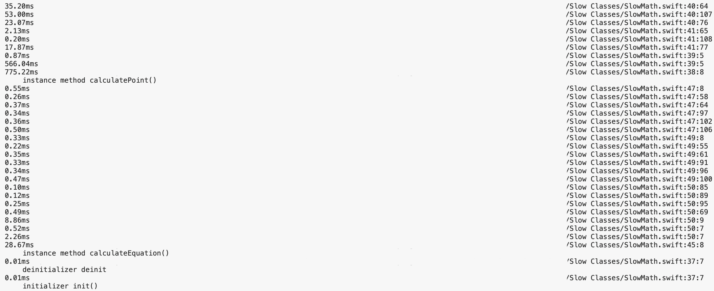
Even more information is written in the log. It now shows the time it took to build each expression along with the time for each method. This is very informative but not very user-friendly.
In Xcode, you can specify a threshold to show a warning if an expression or a function took too long to build.
Add those two flags with the previous two:
-Xfrontend -warn-long-expression-type-checking=25
-Xfrontend -warn-long-function-bodies=25
The first will display a warning when an expression exceeds the threshold. The second will show a warning when a function or a method took too long. The threshold for each is set for 25 milliseconds.
Note: 25 milliseconds is a small number. However, that’s what this chapter uses. In your own projects, feel free to specify the threshold you think suffices to help you identify spikes.
Clean the build folder, then build the project again. Notice the presence of a few new warnings.
Chaining & build times¶
Take those warnings on one by one. Open SlowArray.swift. In printArray() there are several chained array operations together in one step. These operations can be broken down into multiple steps:
func printArray() {
var doubleArray = Array(repeating: 1.123, count: 100)
doubleArray = doubleArray.map { $0 * Double.random(in: 0 ..< 1000) }
var intArray = Array(repeating: 1, count: 100)
intArray = intArray.map { $0 * Int.random(in: 0 ..< 1000) }
let doubleMultiply = zip(doubleArray, intArray)
.map { $0 * Double($1) }
let sum = doubleMultiply.sorted()
.map { $0 * 123 }
.reduce(0, +)
print(doubleMultiply)
print(sum)
}
Open SlowMath.swift. In calculatePoint(), a new CGPoint is constructed, but each parameter looks to be a long and confusing equation. And calculateEquation() is not less confusing at all!
func calculatePoint() -> CGPoint {
CGPoint(
x: (UIApplication.shared.windows.first?.frame.size.width ?? 300 / 3)
+ CGFloat.random(in: 0...1000) / CGFloat(100),
y: (UIApplication.shared.windows.first?.frame.size.height ?? 300 / 3)
+ CGFloat.random(in: 0...1000) / CGFloat(100)
)
}
func calculateEquation() -> Double {
(Bool.random() ?
(pow(pow(Double.random(in: 100...1000), 2.0), 6.0) / 5.5
+ Double.random(in: 100...1000)) * 25 / 3
+ Double.random(in: 100...1000)
:
(pow(pow(Double.random(in: 1...100), 2.0), 6.0) / 5.5
+ Double.random(in: 1...100)) * 25 / 3 + Double.random(in: 1...100))
+ Double(UIApplication.shared.windows.first?.frame.size.width ??
CGFloat(400) / 2 * 500 * CGFloat.random(in: 100...1000))
}
What seems to be common between all those slow building methods and expressions is chaining operations together.
Look at SuspiciousChain.swift and check getSuspiciousStruct():
static func getSuspiciousStruct() -> Self {
SuspiciousStruct()
.setting(\.name) { "SomeName" }
.setting(\.phone) { "0123456789" }
.setting(\.email) { "email@somewhere.com" }
.setting(\.country) { "Earth-Country" }
.setting(\.city) { "Earth-Country-City" }
.setting(\.address) { "A place on earth, beside that shop" }
.setting(\.job) { "Super-Duper iOS Developer" }
}
Xcode doesn’t seem to be complaining at all about how long this method took to build. If you check the build log to make sure, you’ll find it took a very tiny amount of time. For me, it took half a millisecond. So the theory that chaining expressions causes long build times is not 100% accurate.
The factor most affecting the build time here is the chaining of different operations that have different precedence and associativity. It probably took you awhile to read it yourself.
In getSuspiciousStruct(), the chain is a clear order of methods. Despite the many methods, you didn’t have any problem reading the chain, unlike the other methods.
Breaking down expressions with large build times into smaller ones is an improvement. Sometimes you can save actual seconds, while in other instances the time saved may not be noticeable. But it is worth measuring occasionally, especially if you’re using a build server and have a large team.
The possible causes of a build-time spike are many, and the significance of this impact will vary from one Xcode version to another. However, the way to identify and measure the time taken for your code to compile is the same.
Now, you’ve learned how to use existing instruments to measure defined meters on your app. In the next section, you’ll see how you can use a new instrument to measure something new — and even measure anything you want, at your discretion.
Timelane¶
Tracking the progress of asynchronous code is usually not a trivial feat. To help with that, Marin Todorov developed a fantastic instrument called Timelane. You can download it from: http://timelane.tools.
Timelane is a plugin that you install on Instruments, and it works like the other templates you already have.

In this section, you’ll learn how to use Timelane to help you measure and track asynchronous code. The FarOutPhotos project has a bigger gallery of NASA pictures. You use the image library, Nuke, to download the images asynchronously.

The project uses the standard Nuke library to download the gallery images. When you tap one of them to open the details, the Combine extension for the library opens the image in full size. The full-sized image displays over two steps. First, the extension downloads the resized image from the gallery. Then, it shows the full-sized image right after.
You’ll use Timelane to track when each image was requested, how long it took to be retrieved, if it was completed or canceled and its download progress.
Putting Timelane to work¶
Build and run the project and look at the console log in Xcode. It shows a lot of started logs, a lot more progress and completed — but it’s very hard to track them. Timelane does that magic for you.

To add Timelane’s Swift package, open the menu File ▸ Swift Packages ▸ Add Package Dependency.

Add the URL “https://github.com/icanzilb/TimelaneCombine” then click next. When prompted for the rules choose Version, from the drop-down choose Exact and write 2.0.0 in the version number text field.

Note: At the time of writing this chapter Timelane 2.0.0 was the latest version.
This will download two packages: TimeLaneCombine and TimeLaneCore. Open PhotoGalleryViewController.swift and import TimelaneCore with the other imports:
import TimelaneCore
Right after the declaration of the class, define a new subscription lane labeled Gallery to log the events on:
var galleryLane = Timelane.Subscription(name: "Gallery")
At the very end of the file, you’ll find ImagePipelineObserving.pipeline(_:imageTask:didReceiveEvent:). It’s the delegate method that’s responsible for all the logs you see on the console.
Add those three lines in their correct locations in the switch statement:
// for .started
galleryLane.begin()
// for .cancelled
galleryLane.end(state: .cancelled)
// for .completed
galleryLane.end(state: .completed)
Profile and record the app. Use the Timelane template in Instruments.
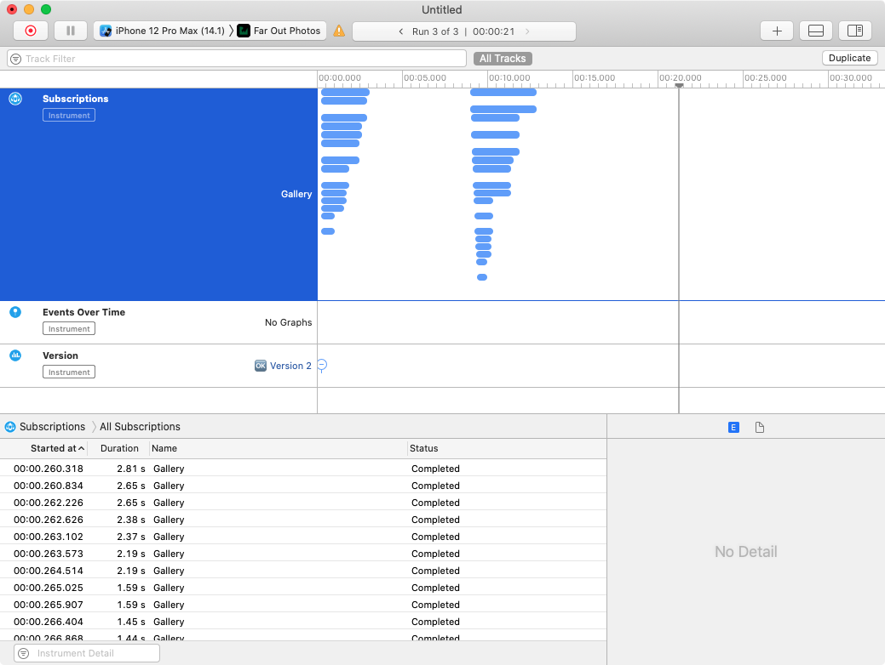
This instrument now shows you visually the duration of each begin() and end(:). However, it’s not clear from this graph which line represents which image.
There’s also a slight problem with the code you added. You only defined one lane named Gallery, and all the events are logged onto this lane. Because your code is asynchronous, the order of begin() doesn’t need to call the same as end(:). For that, you need to have a lane for each request.
Multiple lanes¶
Replace the lane you defined at the beginning of the class with a dictionary of lanes:
var galleryLanes: [ImageTask: Timelane.Subscription] = [:]
Then update the implementation of ImagePipelineObserving.pipeline(_:imageTask:didReceiveEvent:) to the following:
let imageName = imageTask.request.urlRequest.url?.lastPathComponent ?? ""
switch event {
case .started:
let lane = Timelane.Subscription(name: "Request " + imageName)
lane.begin()
galleryLanes[imageTask] = lane
print("started " + imageName)
case .cancelled:
let lane = galleryLanes[imageTask]
lane?.end(state: .cancelled)
galleryLanes[imageTask] = nil
print("canceled " + imageName)
case .completed(result: _):
let lane = galleryLanes[imageTask]
lane?.end(state: .completed)
galleryLanes[imageTask] = nil
print("completed " + imageName)
case .progressUpdated(
completedUnitCount: let completed,
totalUnitCount: let total
):
let lane = galleryLanes[imageTask]
let percent = completed * 100 / total
lane?.event(value: .value("progress: \(percent)"))
print("progress for \(imageName): \(percent)")
default:
print("default")
}
Uninstall the app from the simulator to remove any cached images. Profile, record the app and look at Instruments again.

Also, under the subscriptions group, there’s another group for the events. You’ll find all the progress events you triggered are grouped for each subscription. In the graphical view, select the Events over time graph, then in the bottom select All Events by Subscription.
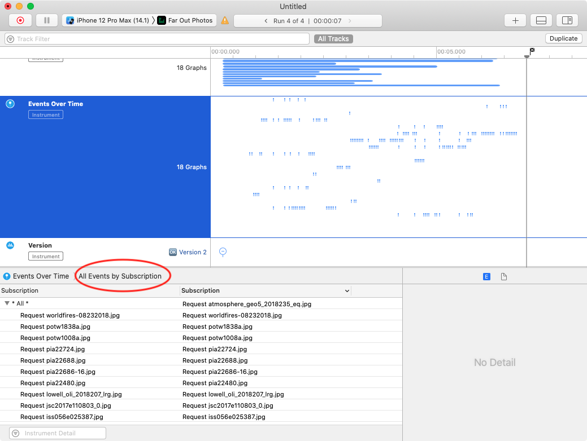
When you select one of the events in the list, the time marker at the top moves to the location of that event to show you the moment that this happened.

Profile and record the app again. This time, scroll quickly up and down.

Blue bars represent completed operations, green represents operations that are still in progress and orange represents canceled operations.
When you scroll quickly, Nuke automatically optimizes requests. When a request for an image on a cell isn’t completed and another one is triggered for that same cell, Nuke cancels the first one in favor of the latter — hence the cancel event. A picture is worth a thousand words, isn’t it?
TimelaneCombine¶
Open PhotoViewController.swift and import TimelaneCombine:
import TimelaneCombine
For Combine usage, it is simpler. Go to loadImage(url:) and change the declaration of resizedImagePublisher & originalImagePublisher variables to the following:
let resizedImagePublisher =
ImagePipeline.shared.imagePublisher(with: resizedImageRequest)
.lane("Resized Image")
let originalImagePublisher =
ImagePipeline.shared.imagePublisher(with: url)
.lane("Full Image")
Profile and record the app. Select any of the images in the gallery and notice the addition of two new lanes in the subscriptions group.
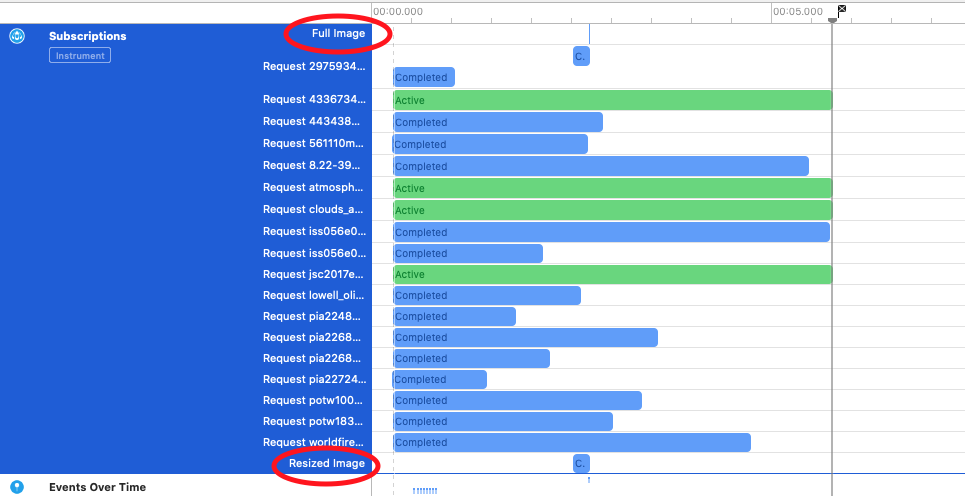
The begin and end calls were automatically executed for the Combine subscriber, and you didn’t need to track anything.
Showing information visually is much easier than searching for it in a console log. You can see how crowded operations were and when they all ended with a glance.
Visual representation can help you do much more than this. You can quickly spot anything wrong with the order of your operations, or if something was supposed to finish but gave an error instead.
To learn more about Timelane, visit http://timelane.tools. The more you learn about it, the better you will use it — especially with Combine and RxSwift.
Signpost¶
Now that you saw a custom instrument, explore what made it possible and how the events are logged from your app to instruments.
Two key points are used on the app side: OSLog & os_signpost.
The first uses the system’s log to write any logs directly from your app. The second is a type of log entry to write down.
Open the project FarOutPhotos-Signposts. It’s identical to FarOutPhotos but with a clean start just before you integrated Timelane.
Go to PhotoGalleryViewController.swift, and add this to the imports:
import os.signpost
Then, right after the class declaration, add this line:
let log = OSLog(
subsystem: "com.raywenderlich.Far-Out-Photos",
category: "PhotoGallery")
This created an instance of a new log, with the AppID for its subsystem, and the category PhotoGallery. The category can be anything, but it’s always helpful to have relevant names.
Tracking image downloads¶
Similar to what you did with Timelane earlier, you want to track the image downloads. Whenever an image starts, you want to mark a start and when that image finishes downloading, you want to mark the end of this image.
In pipeline(_:imageTask:didReceiveEvent:), add this line in the .started case:
os_signpost(.begin, log: log, name: "ImageDownload")
And this line in the .completed case:
os_signpost(.end, log: log, name: "ImageDownload")
Profile the project, create a new Blank Instruments project and add the os_signpost instrument from the library.
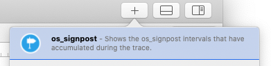
Record the project and right away you’ll see entries. You don’t want all of them, so expand the instrument until you find the row/lane called com.raywenderlich.Far-Out-Photos. Inside, you’ll find PhotoGallery. Those were the names you used to define the log object. You’ll also see several ImageDownload intervals.

Each os_signpost end call pairs with a begin call that has the same value in the name parameter. But because they all have the same name, Instruments seems to have just paired them in reverse order: The last one that began is the first to end. Also, this is not the order of the images loaded on the screen.
You could think that this is easy: Why not just put the image name as that string?

But when you try that, Xcode complains. The name parameter must be a static string. The way to disambiguate between different begin and end signposts is by using OSSignpostID.
Providing this ID along with the name in the begin and end calls means that matching is done when a begin and an end both have the same name and the same SignPostID.
In pipeline(_:imageTask:didReceiveEvent:), add the line at the top of the function:
let signpostID = OSSignpostID(log: log, object: imageTask)
This created an OSSignpostID object with the image task. This makes sure that you have the same ID for the same image task.
Update the two os_signpost calls to include the new ID:
os_signpost(.begin, log: log, name: "ImageDownload", signpostID: signpostID)
.
.
.
os_signpost(.end, log: log, name: "ImageDownload", signpostID: signpostID)
Remove the app from the simulator to delete the cached images, then profile and record.

It doesn’t look like an upside-down pyramid anymore, so this solved the matching problem. But it doesn’t show much information on which image has which bar.
Displaying more information¶
Each signpost can have metadata attached to it. For now, it’s enough to include the name of the image in the begin signpost. Update the begin call to the following:
os_signpost(
.begin,
log: log,
name: "ImageDownload",
signpostID: signpostID,
"%{public}s",
imageName)
The parameters right after the signpost ID are a format string followed by the arguments needed. The format string follows the same formatting rules used by the Logging. Here, you only want to log the image name as a public string.
Delete the app, then profile and record.

Now, the bars are much more informative. The next part is to track if the image was completed or canceled. For that, you’ll add different metadata on their signposts. The signpost you already have for the completed case should have "completed" as its metadata, and the canceled one to have "canceled".
Update the end call for the completed case as follows:
os_signpost(
.end,
log: log,
name: "ImageDownload",
signpostID: signpostID,
"completed")
And add a new end call in case of a cancelation:
os_signpost(.end,
log: log,
name: "ImageDownload",
signpostID: signpostID,
"canceled")
Delete the app again, then profile and record. Scroll up and down a couple times as soon as the app starts on the simulator.
The information on the bars might not be very clear, especially for the canceled items, because the bar will be rather narrow — which is a good thing. Look at the table below the graph.

You’ll see signposts that began, how many times, total duration, min and average duration — some very useful statistics. Most importantly, they will also show you the metadata you received with the end signposts. The screenshot shows two canceled and one completed for this image. That’s a lot of useful info right there!
Using signposts as events¶
Signposts can also be an event — they don’t need to always represent the beginning and the end of an operation. You can have a .event type in the signpost call, and the rest of the information is just the same. However, no matches occur because this event is a standalone signpost. Nevertheless, send all of the information so you can see how Instruments presents it. Add a new signpost call in .progressUpdated, right after the percentage calculation:
os_signpost(.event, log: log, name: "ImageProgress", signpostID: signpostID, "%{public}s progress: percentd", imageName, percent)
Delete the app, then profile and record.
Your events are present in the graph, but it might be difficult to identify them. It’s better to see them from the table below in the List: Events section.
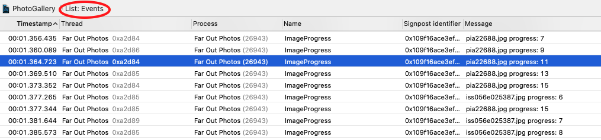
This only scratches the surface of what you can do with os_signpost. You can provide metadata that Instruments can understand so it automatically creates useful statistics for you.
You can create custom instruments that give you more control over the UI and how the information is provided.
The Instruments Developer Help is an awesome place to find more about what you can do with Instruments. The more you understand the tool and what it has to offer, the more you’ll find yourself already knowing solutions to challenges you come across.
Key points¶
In this chapter, you learned a lot about some of the tools available to understand and measure what’s happening inside your app. You learned how to:
- Understand and observe how your app allocates memory size.
- Discovered allocated objects in the memory graph and Instruments.
- Measure the performance of your code and the time it takes to execute it.
- Understand how faults work in Core Data, how to avoid them and how to reduce the memory usage when you’re done using fault objects.
- Measure the compile time of your expressions and methods.
- Use the fantastic measurement instrument, Timelane, which shows the progress of your asynchronous code.
- Send custom events to instruments using
os_signpost.